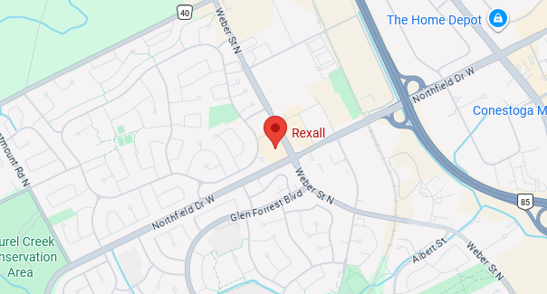

← Back to Projects
Android App
MediTrack
A health management app that helps users track medications, manage appointments, and find nearby healthcare offices on an interactive map.

Overview
MediTrack is a health management application designed to help users organize their medical lives in one place. Users can record and track daily medications, schedule and store medical appointments, and locate nearby healthcare offices using an interactive map. The app aims to improve consistency in medication adherence, appointment management and healthcare access, through an elegant, user-friendly design that follows Material Design 3 principles.
Who it's for
- Elderly people who manage multiple prescriptions and appointments.
- Patients with chronic illnesses who need consistent medication tracking.
- General public who need to quickly find a clinic or pharmacy nearby.